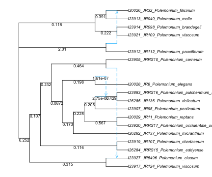

using CSV # read/write CSV and similar formats
using DataFrames # versatile tabular data format
using PhyloNetworks # includes many utilities
using PhyloPlots # for plotting networks: via R
using RCall # run R within Julia
using StatsBase, StatsModels # basic stat functions, e.g. to build regression formulas
using Distributions # to get probabilities and quantiles of common distributionsWorkshop overview
Comparative methods are meant to answer questions about trait evolution. In this workshop, we will learn about methods on networks:
- to account for reticulation in the phylogeny, and
- to look at how reticulation might have affected trait evolution.
topics we will cover
- How to calibrate a network, if needed
- continuous response:
- phylogenetic regression & phylogenetic ANOVA when the phylogeny is a network. Predictors can be continuous or discrete.
- how account for within-species variation in the response trait
- ancestral state reconstruction
- how to measure the impact of gene flow
- discrete trait
- ancestral state reconstruction
- was the trait via gene flow?
- How to visualize the results
let’s get started
Load the packages we will use:
We will use data on Polemonium from Rose et al. 2021 and Teo et al. 2023.

For a preview, we can first load the network topology. It was estimated with SNaQ, so its branch lengths are in coalescent units, and it will need to be rooted correctly later.
net_snaq = readTopology("data/polemonium_network_fromSNaQ.phy");
R"par"(mar=[0,0,0,0], cex=0.7); # 0 margins, cex<1 for smaller 'character expansion'
plot(net_snaq; showedgelength=true, xlim=[0,18]); # increased limit to see full taxon labels
then the trait data
traits_indiv = CSV.File("data/polemonium_traits_individual.csv") |> DataFrame
size(traits_indiv) # number of rows and number of columns(1757, 6)how to get help
help mode: type
?then the name of the function (or package) you’d like information about. For example, if you type?thenreadTopologyyou should see this:help?> readTopology search: readTopology readTopologyLevel1 readMultiTopology readMultiTopologyLevel1 readTopology(file name) readTopology(parenthetical description) readTopology(IO) Read tree or network topology from parenthetical format (extended Newick). If the root node has a single child: ignore (i.e. delete from the topology) the root node and its child edge. Input: text file or parenthetical format directly. The file name may not start with a left parenthesis, otherwise the file name itself would be interpreted as the parenthetical description. Nexus-style comments ([&...]) are ignored, and may be placed after (or instead) of a node name, and before/after an edge length. A root edge, not enclosed within a pair a parentheses, is ignored. If the root node has a single edge, this one edge is removed.Julia will automatically turn back to julian mode. If you don’t know the exact function name, give it your best try. Julia will indicate functions with similar names.
shell mode: type
;to type a shell command. When you are done using the shell, type “delete” or “backspace” to return to julian mode.package mode: type
]to access this mode, which provides quick ways to install a package withadd ..., change the version of a package you already installed, check what packages and what version you’re currently using withstatus, etc. Type backspace to return to julian mode.R mode, after using the RCall package: type
$to access R. This R session has access to the variables created by Julia, and vice versa. Type backspace to return to julian mode. Doing@rlibrary ggplot2within julia provides access to the R package ggplot2 package outside the R mode and with easy syntax.